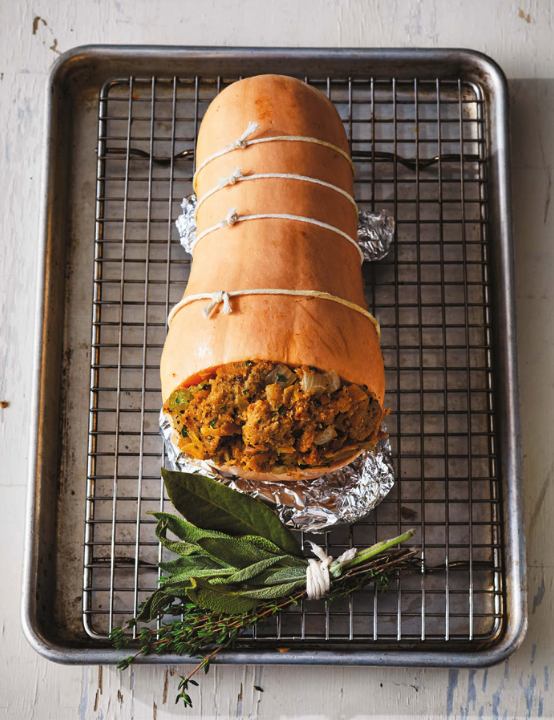

Thanksgiving Stuffing Butternut Squash

Description
I think I'm a genius for this one. No longer will vegetarians have to submit to Tofurky or mock meats. Just
stuff a squash with amazing buttery bread and herbs and roast and serve with thick vegetable-based gravy, and
you'll be the hottest vegetarian dinner host ever in the whole universe. I'm sure some veggie people have done
this. If not, here ya go, you absolute freaks.
Ingredients
FOR THE "POULTRY" SEASONING:
- 1/4 cup (32 g) ground sage
- 2 tablespoons dried thyme
- 2 tablespoons dried marjoram
- 2 tablespoons dried rosemary
- 1 tablespoon ground nutmeg
- 1 tablespoon freshly cracked black pepper
FOR THE SQUASH AND STUFFING:
- 2 pounds (900 g) plus ⅓ cup (40 g) unsalted butter
- 2 white onions, diced
- 6 ribs celery, sliced
- 1 cup (150 g) coarsely grated butternut squash
- 1 cup (100 g) ready-cooked chestnuts, roughly chopped and soaked in hot water for 20 minutes
- 6 1/2 cups (1.5 L) Court Bouillon
- 1 large sourdough loaf, crust removed, sliced, lightly toasted, and torn into 1-inch pieces
- 1 cup (50 g) chopped flat-leaf parsley
- 2 teaspoons kosher salt
- 1 large butternut squash, cut in half lengthwise, seeded, and hollowed out
FOR THE VEGETABLE GRAVY:
- 1/2 cup (100 g) unsalted butter
- 2/3 cup (100 g) all-purpose flour
- 1 quart (1 L) Celeriac Stock, reduced by half, infused with 1/2 cup (15 g) ground sage
- 1/3 cup (48 g) “poultry” seasoning
- 1 teaspoon kosher salt
Cooking Instructions
- Make the “poultry” seasoning: Combine all the ingredients in a small bowl.
- Preheat the oven to 375°F (190°C).
- Make the stuffed squash: In a large saucepan, melt 2 pounds (900 g) of the butter over medium-high heat.
- Add the onions and celery, reduce heat to medium-low, and gently sweat for 20 minutes, or until the
vegetables are translucent.
- Add 1/3 cup (50 g) of the “poultry” seasoning and toast until fragrant, about 4 minutes.
- Add the grated squash and chestnuts and stir until completely coated; cook for 10 minutes.
- Add 4 cups (900 ml) of the court bouillon, bring to a simmer, and mix in the sourdough pieces. The mixture
should be slightly wet.
- Add the parsley and salt and remove from heat.
- With one squash half, cut off about 2 inches (5 cm) from the bulbous end to create a vent.
- Stuff the other hollowed-out squash half with the stuffing; pack it in with the stuffing crowning out of the
squash by about 3/4 inch (2 cm).
- Place the piece with the end cut off on top of the stuffed bottom and tie with butcher's twine. (If you have
no idea what I'm saying, flip to this page for a picture of how the vent should look.) Once securely tied,
make sure that the stuffing is packed evenly into the squash.
- Now melt the remaining 1/3 cup (40 g) butter into the remaining 2 1/2 cups (600 ml) court bouillon for
basting.
- Place the whole squash onto a rack set in a baking sheet. Bake for about 1 hour, basting the squash with the
court bouillon and butter mixture every 15 minutes, until the stuffing is golden brown and the whole squash
is fork-tender.
- Make the vegetable gravy: As the squash is cooking, melt the butter in a medium saucepan over medium heat.
- Add the flour, stir until the flour is fully incorporated into the butter, and cook until it starts to
bubble and turn golden in color, about 2 minutes.
- Slowly pour in half the celeriac stock and blend with an immersion blender until thick.
- Add the rest of the celeriac stock, the “poultry” seasoning, and salt and cook for 10 minutes over
medium-low heat.
- Blend again and check for seasoning. Keep warm until plating.
- Slice the whole squash into 1-inch (2.5 cm) rounds and place on a serving platter; cover with vegetable
gravy or serve gravy on the side.